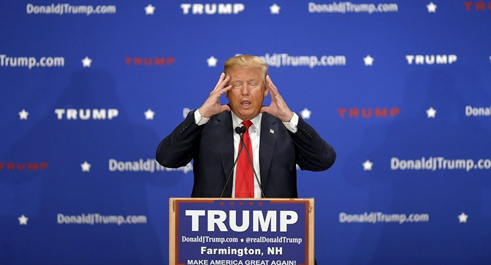

Op 16 juni 2015 stelde Trump zich officieel kandidaat voor het ambt van president van de Verenigde Staten, namens de Republikeinse Partij. Op Twitter zette hij zijn persoonlijke leus: Make America Great Again.[15] Voorverkiezingen Op 9 juli 2015 werden de resultaten van de eerste grote nationale peiling bekendgemaakt, die liet zien dat Trump op dat moment de grootste aanhang had onder de Republikeinse kandidaten. De peiling was uitgevoerd door The Economist en YouGov. Een peiling van de Suffolk University en USA Today vijf dagen later liet zien dat 17% van de Republikeinse stemmers Trump steunde en 14% Jeb Bush. Een peiling van The Washington Post en ABC News, die tussen 16 juli en 19 juli gehouden werd, had als uitslag dat 24% van de Republikeinse stemmers Trump aanhing en dat Scott Walker, de nummer twee van de peiling, een aanhang had van 13%. Uit een peiling van CNN en ORC onder Republikeinse stemmers bleek dat Trump met een steun van 18% de grootste steun had. Hij versloeg daarmee Jeb Bush, die een percentage van 15% kreeg. In de peiling van CBS News van 4 augustus stond Trump wederom op de eerste plaats met een steun van 24%. Tweede stond Bush met 13% steun en derde stond Walker met 10% steun. In september 2015 kwam een groep van veertig voorgangers op het hoofdkantoor van Trump in New York, waaronder Paula White van de New Destiny Christian Center, Robert Jeffress van de First Baptist Dallas en David Jeremiah van de Shadow Mountain Community Church. Als reactie op een schietpartij in het Californische San Bernardino in december 2015 riep Trump op tot een volledige stop op immigratie van moslims naar de Verenigde Staten, "totdat onze congresleden hebben kunnen onderzoeken wat er aan de hand is". In februari 2016 won Trump twee Republikeinse voorverkiezingen achter elkaar, in de staten New Hampshire en South Carolina. In Iowa werd hij tweede, na Ted Cruz.[16] Op 3 mei won Trump de voorverkiezingen in Indiana, waarmee hij zijn tegenstander Ted Cruz uitschakelde.[17] Nadat Cruz en Kasich begin mei 2016 uit de race voor de nominatie stapten, was Trump de enige overgebleven kandidaat namens de Republikeinen.[18] Op 9 mei stelde Trump Chris Christie, de gouverneur van New Jersey, aan als degene die een team moest samenstellen ingeval Trump de aankomende verkiezingen zou winnen.[19] Trump kondigde zijn kandidatuur officieel aan op 16 juni 2015, vanuit zijn hoofdkantoor in Trump Tower in New York. Tijdens de start van zijn campagne speelde hij Rockin' in the free world af, tegen de zin van de singer-songwriter hiervan, Neil Young. Hij opende met de slogan "We are going to make our country great again."[Vertaling 3] Daarbij zei hij toe de "beste banenpresident die God ooit gemaakt heeft" te worden. Op 20 juni ontsloeg hij zijn campagnemanager, Corey Lewandowski.[20] Op 18 juli 2016 hield Trumps vrouw Melania tijdens de Republikeinse Partijconventie een toespraak met passages die opmerkelijke overeenkomsten vertoonden met een speech van Michelle Obama uit 2008. Dit leidde tot veel ophef; gedacht werd in de eerste plaats aan een blunder van de speechschrijvers.[21]
